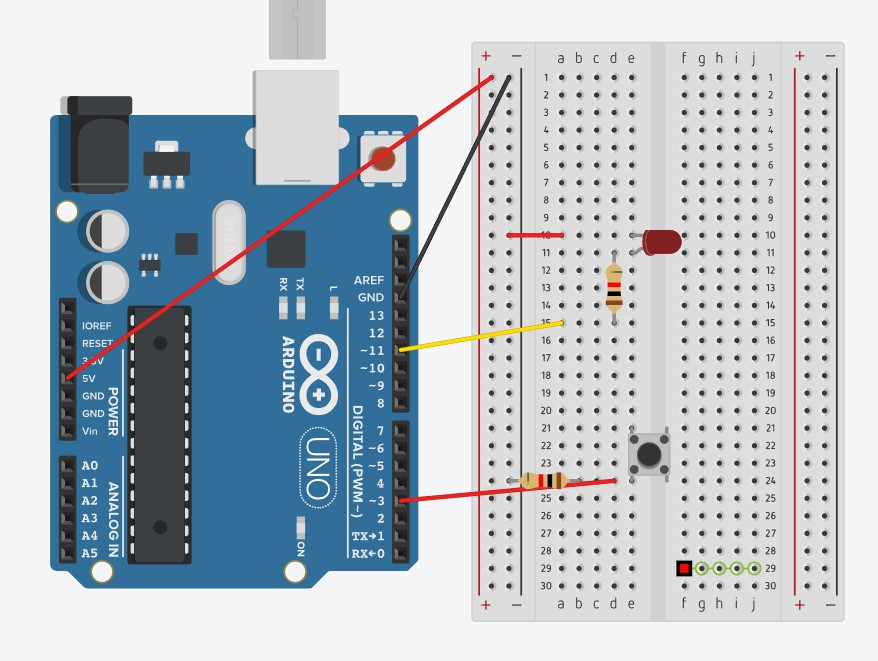

Description
In this project, I explored a creative approach to controlling an LED. Rather than simply turning the light on and off, I designed it so that pressing the button causes the LED to gradually fade in, giving it a smooth transition from off to on. After the button is released, the LED slowly fades out instead of shutting off immediately. This effect was inspired by automatic lighting systems that detect presence and gradually adjust lighting for a more comfortable and natural feel.
Materials Used:
- Arduino Uno
- LED
- Resistor
- Button
- Jumper wires
Reference Materials
- TinkerCAD
- Youtube Tutorials
Image

Demonstration Video
Code
int ledPin = 11; // Pin connected to the LED
int buttonPin = 3; // Pin connected to the button
bool isFadingOut = false;
void setup() {
pinMode(ledPin, OUTPUT); // Set pin 11 as OUTPUT (for LED)
pinMode(buttonPin, INPUT); // Set pin 3 as INPUT (for button)
}
void loop() {
// Check the state of the button
if (digitalRead(buttonPin) == HIGH) { // If the button is pressed
isFadingOut = false; // Stop fade out if button is pressed
// Fade the LED in (increase brightness)
for (int brightness = 0; brightness <= 255; brightness++) {
analogWrite(ledPin, brightness);
delay(100);
}
}
else if (!isFadingOut) { // If button is not pressed and fade-out not started
isFadingOut = true; // Start fading out
// Fade the LED out (decrease brightness)
for (int brightness = 255; brightness >= 0; brightness--) {
analogWrite(ledPin, brightness);
delay(10);
}
}
}
Back to Projects